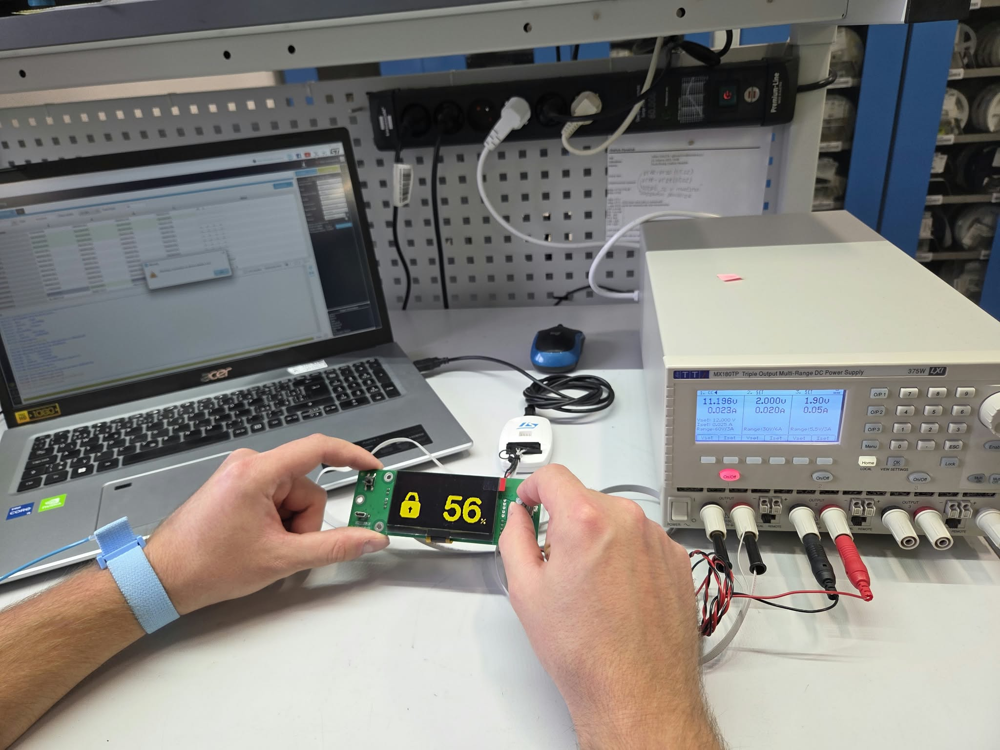

Tvoje DPS prošla výrobou. Nyní je potřeba ověřit, zda opravdu funguje.
- Nastav napájecí napětí 9 V.
- Nastav proudové omezení 50 mA.
- Připoj červenou sondu na +.
- Připoj černou sondu na −.
- Zapni zdroj a proveď zkoušku.
Pokud semafor nebude fungovat, provedeš optickou kontrolu osazení a pájených spojů.